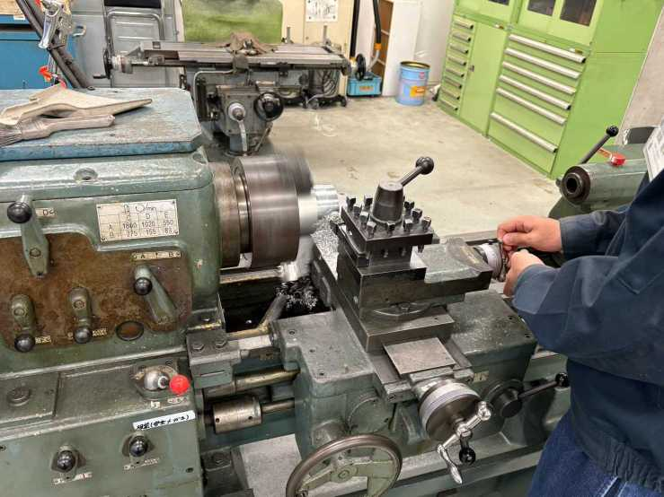
Structure構造班
Structure & Aerodynamics機体の外殻（ボディチューブ）、ノーズコーン、安定翼（フィン）の構造設計・空力シミュレーション、3Dプリンタや切削加工、安全なパラシュート開傘機構を担当します。
CAD / Fusion360
空力計算
3Dプリンタ
パラシュート展開
工学院大学 宇宙開発プロジェクト KASA (Kogakuin AeroSpace Adventurers) は、 学生自らの手でハイブリッドロケットや小型模擬人工衛星（CanSat）を設計・製作・打ち上げまで一貫して行うものづくりプロジェクトです。
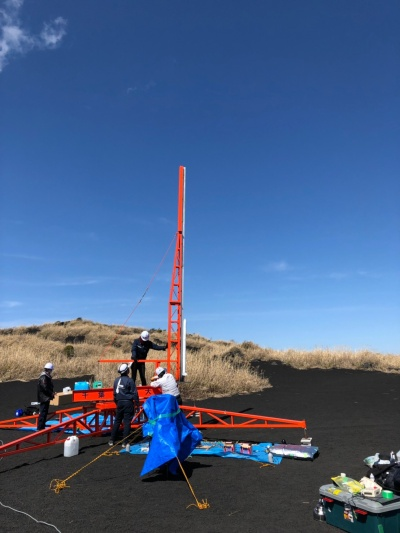
工学院大学 宇宙開発プロジェクト KASAは、理論だけにとどまらず、 実際の機体設計・製造・試験・打ち上げまでを実践する学生エンジニアリング集団です。
私たちは小型のモデルロケット製作からスタートし、より本格的な推力と工学的知見を要するハイブリッドロケットの開発に着手。 能代宇宙イベントや伊豆大島共同打上実験、モデルロケット全国大会など、全国の舞台で技術を磨いてきました。
2025年度からは活動の幅をさらに広げ、ロケットのみならずCanSatや宇宙ミッション設計をも見据えた「宇宙開発プロジェクトKASA」として再始動。 学部学科の枠を超え、意欲ある学生たちが八王子キャンパス「夢づくり工房」に集い、日々ものづくりに没頭しています。
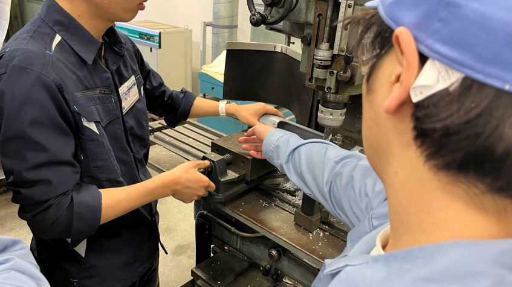
夢づくり工房での精密加工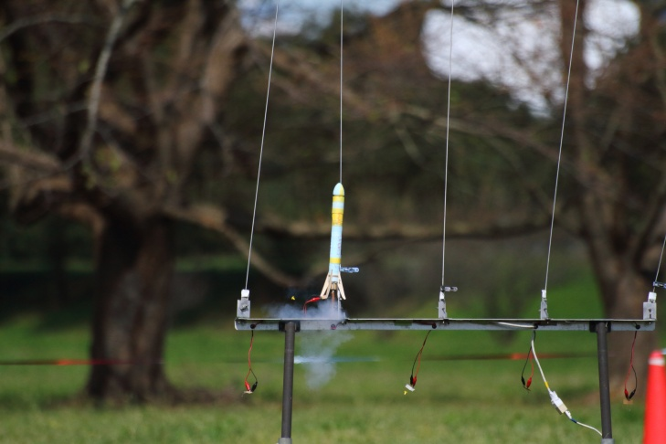
モデルロケット打上げ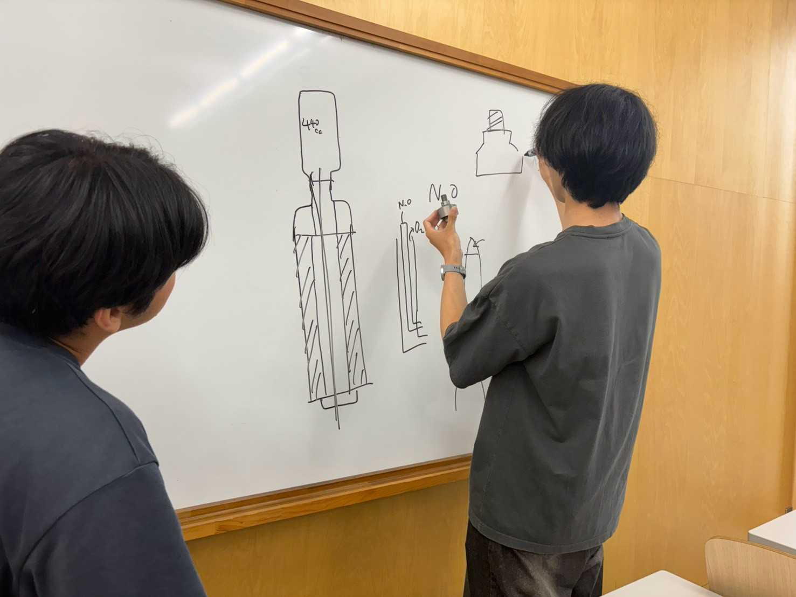
エンジン設計ミーティングプロジェクトは目的ごとに班分担を行い、全員が責任とやりがいを持って設計・開発に携わっています。 未経験からでも先輩の指導や勉強会を通じてスキルアップできます。

Structure機体の外殻（ボディチューブ）、ノーズコーン、安定翼（フィン）の構造設計・空力シミュレーション、3Dプリンタや切削加工、安全なパラシュート開傘機構を担当します。
固体燃料と液体酸化剤を組み合わせたハイブリッドロケットエンジンの燃焼室設計、燃料選定、流体配管・バルブ供給系の制御、地上燃焼試験を担当します。
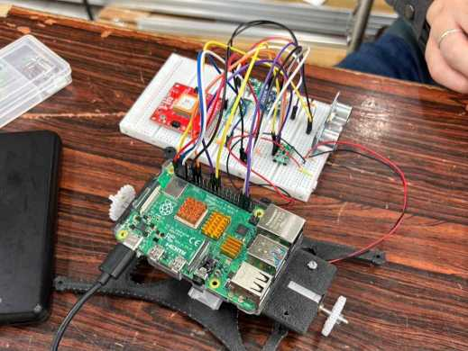
Avionicsマイコン制御による姿勢検知、気圧・加速度センサ計測、遠隔無線テレメトリ通信、開傘点火回路、地上受信ステーションのデータ可視化プログラムを構築します。
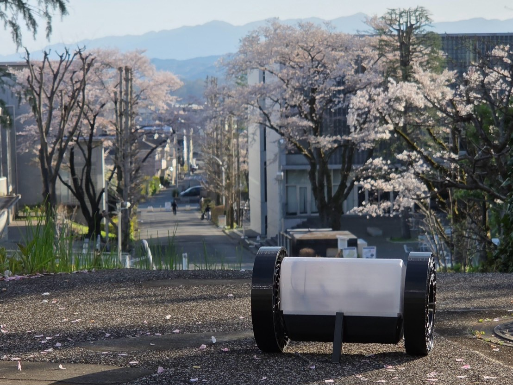
Satellite2025年度からの新ミッション。気球やロケットからの投下実験を通じて、小型模擬人工衛星（CanSat）の自律走行・大気データ取得・画像伝送などの宇宙ミッションを実証します。
試行錯誤を重ねながら積み上げてきた、KASAのタイムラインです。
2026年4月に新体制が始動。大学からの支援予算も増額され、次期ハイブリッドロケットの設計開発および小型人工衛星（CanSat）プロジェクトを本格化。
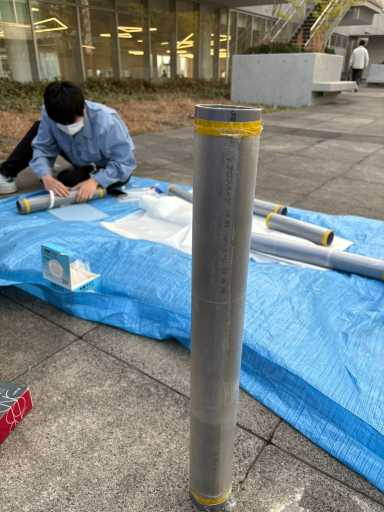
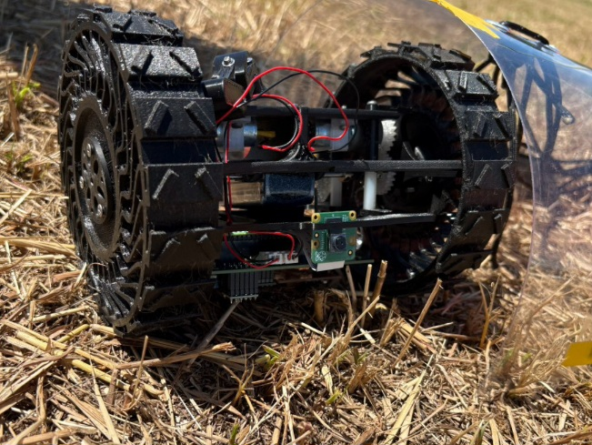
モデルロケットにとどまらず総合的な宇宙開発を目指し名称を変更。夏季合宿にてモデルロケット打ち上げと新機体設計を実施。第62回八王子祭にも出展し活動を広く発信。
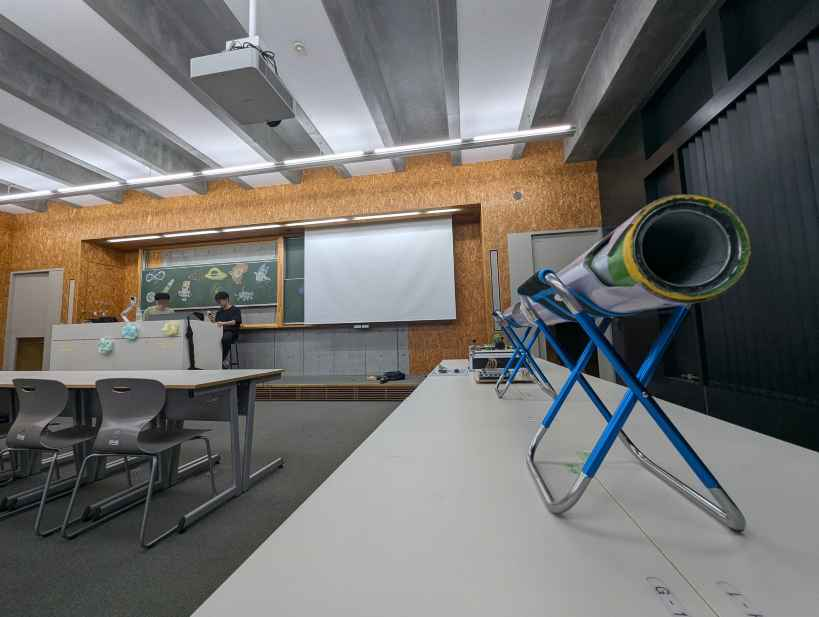
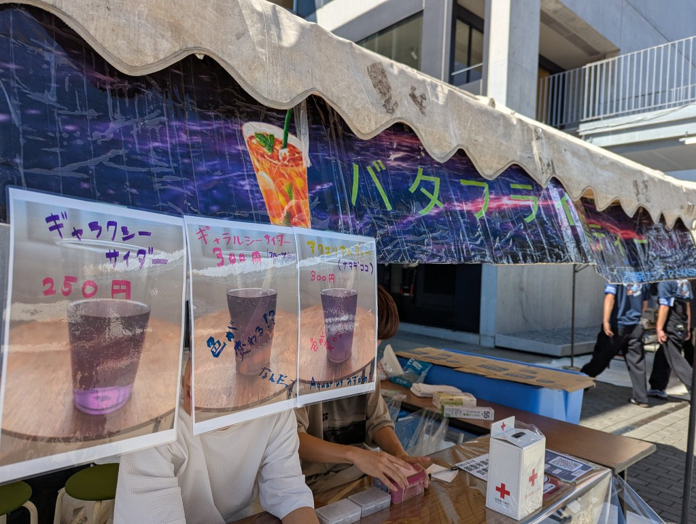
3月、伊豆大島で行われた共同打上実験に参加し、自作ハイブリッドロケットの打上げ実験を実施。他大学（東工大、早稲田、東海大等）との技術交流や電子工作体験会も開催。
有志学生によりプロジェクト発足。JAXA筑波宇宙センターで開催された「第33回モデルロケット全国大会」に初出場。株式会社ミスミグループ「学生ものづくり支援団体」に採択される。
知識や経験がなくても大丈夫です！「本物のロケットを打ち上げたい」「宇宙に関わるものづくりがしたい」その想いがあれば大歓迎！
KASAには、先進工学部・工学部などから、ものづくりや宇宙、チーム運営に熱意を持つ多様な学生が集まっています。
プロジェクトへの加入希望、見学、取材、協賛に関するご相談など、お気軽にご連絡ください。
ご質問や見学希望は以下のメールアドレスまたは公式SNSのDMよりお気軽にお問い合わせください。
送信いただいた内容はKASA担当窓口（kogakuin.kasa@gmail.com）宛てに直接送信されます。